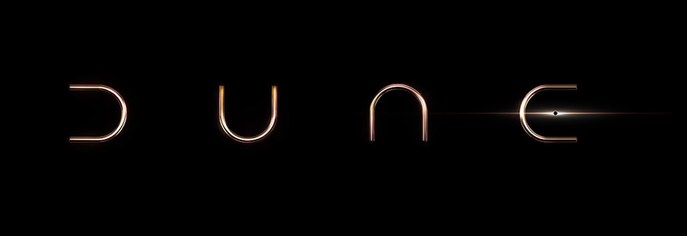

Dune, una obra maestra de la ciencia ficción:
Frank Herbert nos cautivó en 1965 con Dune, una novela épica que no solo cosechó un éxito rotundo, sino que también marcó un antes y un después en la literatura fantástica y de ciencia ficción. Reconocimiento inmediato: Su debut fue galardonado
con el Premio Nébula a la mejor novela en su primera edición, y al año siguiente recibió el prestigioso Premio Hugo a la mejor novela. Un hito en la literatura: Publicada en español por la editorial Acervo en 1975, Dune se convirtió en
la piedra angular de una de las sagas más importantes del género. Su éxito no se ha limitado a la crítica, ya que para 2007 había vendido más de 12 millones de ejemplares, consolidándose como la novela de ciencia ficción más vendida hasta
la fecha.

El éxito de la novela provocó mucho interés en su traslado a la gran pantalla, proyecto que tras muchas vicisitudes se plasmaría en la película Dune (1984), dirigida por David Lynch. Años después, en 2000, también se realizaría una miniserie de televisión
inspirada en la primera novela, titulada Dune, a la que seguiría otra miniserie inspirada en las dos novelas siguientes, titulada Hijos de Dune. En 2021, Denis Villeneuve presentó la película Dune: parte 1 en el Festival Internacional
de Cine de Venecia.